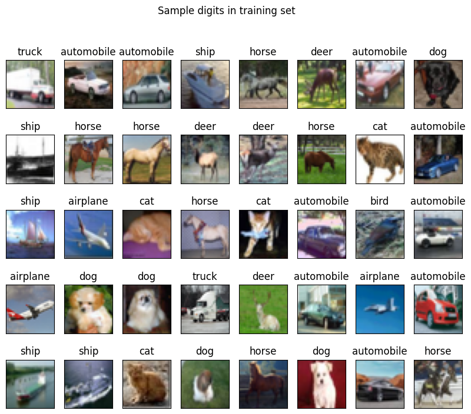
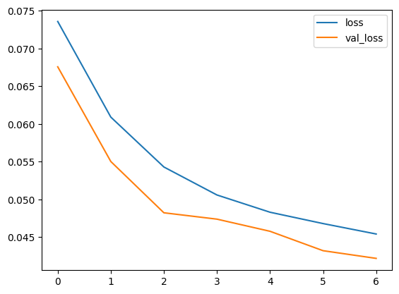
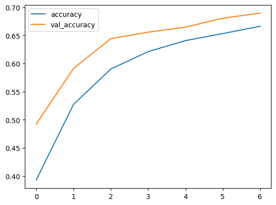

We will finish the semester with a light task. We are going to build a small CNN to classify images from the CIFAR10 dataset and then see how easy it is to construct (near identical) images that our model has difficulty in classifying.
This is an example of an adversarial attacks — where specialised inputs are created with the purpose of confusing a neural network, resulting in a misclassification.
The attacks are based on taking valid inputs and applying changes that while are indistinguishable to the human eye cause the network to fail to identify the contents of the image. There are several types of such attacks, however, here the focus is on the fast gradient sign method (FGSM) attack, which is a white box attack whose goal is to ensure misclassification.
A white box attack is where the attacker has complete access to the model being attacked. One of the most famous examples of an adversarial image shown below is taken from the "Explaining and Harnessing Adversarial Examples" by Goodfellow et al. paper.
Panda to gibbon example (Goodfellow et al.)
Since this is the last practical of the semester we are going light on the theory and just exploring the FGSM attack. Also, to cut down on training time we will use the smaller CIFAR10 dataset, but you might want to do this week's lab using colab and turn select the T4 GPU option.
Imports and Setup
First import our standard python modules for data mining. Module tqdm is used to generate progress bars.
The CIFAR-10 dataset (Canadian Institute for Advanced Research, 10 classes) is a subset of the Tiny Images dataset and consists of 60,000 32x32 color images. The images are labelled with one of 10 mutually exclusive classes: airplane, automobile (but not truck or pickup truck), bird, cat, deer, dog, frog, horse, ship, and truck (but not pickup truck). There are 6,000 images per class with 5,000 training and 1,000 testing images per class.
So we have split the 60,000 observations into 50,000 for training and 10,000 for testing. Each of the observations consists of a 32z32 pixel x 3 channel image. Each channel is a single integer in range 0..255.
Note that the output, y_train and y_test, is a different shape to that in the MNIST dataset.
The following code show the first 40 observations and their labels.
1 2 3 4 5 6 7 8 9101112
fig,axs=plt.subplots(5,8,sharex=True,sharey=True,figsize=(10,8))foraxinaxs.flat:k=np.random.randint(0,x_train.shape[0])ax.imshow(x_train[k])ax.set_title(label_names[y_train[k,0]]);plt.suptitle("Sample digits in training set")ax.get_xaxis().set_visible(False)ax.get_yaxis().set_visible(False)plt.savefig("Sample_images_in_training.png",bbox_inches="tight")plt.show()

Sample inputs and their labels.
Preprocessing
Similar to the MNIST dataset, we scale the inputs from range 0..255 to 0..1.
123
# Scale images to the [0, 1] rangex_train=x_train.astype("float32")/255x_test=x_test.astype("float32")/255
Then add an extra dimension to the input data, so that the last dimension has size one. This is expected by the neural network.
12345
# Make sure images have shape (32, 32, 3) - NOT NEEDEDprint("original x_train shape:",x_train.shape)x_train=x_train.reshape((-1,height,width,channels))x_test=x_test.reshape((-1,height,width,channels))print("x_train shape:",x_train.shape)
Then we convert the single valued output (with 10 values) to a vector of 10-binary values (i.e., one-hot encoding)
123
# convert class vectors to binary class matricesy_train=keras.utils.to_categorical(y_train,nb_classes)y_test=keras.utils.to_categorical(y_test,nb_classes)
which should generate graphs similar to the following


Model loss and accuracy.
Adversarial Attacks
Now we want to see about building images (near identical to original) but the model will miss-classify.
Fast gradient sign method
The fast gradient sign method works by using the gradients of the neural network to create an adversarial example. For an input image, the method uses the gradients of the loss with respect to the input image to create a new image that maximises the loss. This new image is called the adversarial image. This can be summarised using the following expression:
\(\epsilon\) a multiplier to ensure the perturbations are small.
\(\theta\) are the model parameters, and
\(J\) is the loss function.
An intriguing property here, is the fact that the gradients are taken with respect to the input image. This is done because the objective is to create an image that maximises the loss. A method to accomplish this is to find how much each pixel in the image contributes to the loss value, and add a perturbation accordingly. This works pretty fast because it is easy to find how each input pixel contributes to the loss by using the chain rule and finding the required gradients. Hence, the gradients are taken with respect to the image. In addition, since the model is no longer being trained (thus the gradient is not taken with respect to the trainable variables, i.e., the model parameters), and so the model parameters remain constant. The only goal is to fool an already trained model.
The first step is to create perturbations which will be used to distort an original image resulting in an adversarial image. As mentioned above, for this task, the gradients are taken with respect to the image.
1 2 3 4 5 6 7 8 9101112131415
defgenerate_adversary(image,label):image=tf.cast(image,tf.float32)withtf.GradientTape()astape:tape.watch(image)prediction=model(image)loss=tf.keras.losses.MSE(label,prediction)# compute gradients of the loss w.r.t to the input image.gradient=tape.gradient(loss,image)# only sign of the gradients is used to create the perturbationsign_grad=tf.sign(gradient)returnsign_grad
Adversarial attacks - single image
Selecting a random image for testing
1 2 3 4 5 6 7 8 9101112
np.random.seed(72)rand_idx=np.random.randint(0,49999)image=x_train[rand_idx].reshape((1,height,width,channels))label=y_train[rand_idx]print(f'Prediction from CNN: {label_names[np.where(label==1)[0][0]]}')plt.figure(figsize=(3,3))plt.imshow(image.reshape((height,width,channels)))plt.savefig("Original.png",bbox_inches="tight")plt.show()
# Comparing both images fig,axs=plt.subplots(1,3,sharey=True)axs[0].imshow(image.reshape(height,width,channels))orig_label=label_names[np.where(label==1)[0][0]]orig_predict=label_names[model.predict(image).argmax()]axs[0].set_title(f"Original\n({orig_label}/{orig_predict})")axs[1].imshow(((perturbations+1)/2).reshape(height,width,channels))axs[1].set_title("Perturbation\n")attack_predict=label_names[model.predict(adversarial).argmax()]axs[2].imshow(adversarial.reshape(height,width,channels))axs[2].set_title(f"Adversary\n({attack_predict})")plt.savefig("Original_and_Adversary.png",bbox_inches="tight")plt.show()
Note the effect of different values of epsilon. As the value of epsilon is increased, it becomes easier to fool the network. However, this comes as a trade-off which results in the perturbations becoming more identifiable.
Adversarial attacks - adversarial versions of train
1 2 3 4 5 6 7 8 91011121314151617181920212223
# Function to generate batch of images with adversarydefadversary_generator(batch_size):whileTrue:images=[]labels=[]forbatchinrange(batch_size):N=randint(0,49999)label=y_train[N]image=x_train[N].reshape((1,height,width,channels))perturbations=generate_adversary(image,label).numpy()adversarial=image+(perturbations*0.03)images.append(adversarial)labels.append(label)ifbatch%1000==0:print(f"{batch} images generated")images=np.asarray(images).reshape((batch_size,height,width,channels))labels=np.asarray(labels)yieldimages,labels
Testing model accuracy on adversarial examples
1234
x_adversarial,y_adversarial=next(adversary_generator(10000))ad_acc=model.evaluate(x_adversarial,y_adversarial,verbose=0)print(f"Accuracy on Adversarial Examples: {ad_acc[1]*100}")